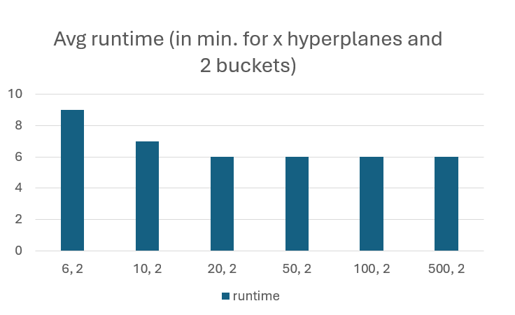

üìä Results & Evaluation
This section summarizes the most important results, evaluation metrics, and insights from our item-based collaborative filtering recommender system, tested on the Food.com dataset. We include references to figures and charts extracted from our project presentation.
üöÄ Dataset Scale & System Performance
- 170,000 recipes
- 25,000 users
- 700,000 interactions
Our system efficiently processed this large-scale dataset using distributed Spark RDDs, validating its scalability and real-world readiness.
üîé Cosine Signature Approximation & Locality Sensitive Hashing (LSH)
We used cosine signature approximation and LSH to scale up the similarity search, making item-based collaborative filtering feasible on massive datasets.
- LSH reduced candidate pairs from 28 billion to ~66 million
This optimization drastically cut down computation time and made large-scale recommendations practical.
Figure 1: Number of candidate pairs found by LSH
- Runtime flattens out after 20 hyperplanes
Increasing the number of hyperplanes initially increases runtime, but the effect plateaus, indicating diminishing returns after a certain point.
Figure 2: Average runtime for LSH

üìà Error & Accuracy
- Low RMSE and Average Error
- Most users have little variance in their ratings, leading to generally low RMSE/ME.
- Trade-off: More hyperplanes result in fewer candidates and a slightly worse (but faster) approximation.
- Centralized ratings:
RMSE/ME =0.59 / 0.45(20 hyperplanes, 1 bucket) - Uncentralized ratings:
RMSE/ME =0.054 / 0.61
Figure 3: RMSE and Avg Error vs. Hyperplanes
- Algorithmic Note:
Tuning is essential: too many candidates (from low hyperplane count) can overwhelm system memory and abort the process.
⚡️ Alternative Baseline Approaches
We evaluated alternative prediction baselines using recipe metadata:
-
Date-only Prediction
- Predicting based only on recipe publication date is very fast (
12 seconds) but yields much higher error (RMSE = 1.4,ME = 0.9).
- Predicting based only on recipe publication date is very fast (
-
Nutrition-based Prediction
- Predicting with nutrition data results in a good trade-off:
RMSE = 0.77,ME = 0.62, with a runtime of just15 seconds.
- Predicting with nutrition data results in a good trade-off:
Figure 4: Prediction based on nutrition
üìù Recommendations & Takeaways
- Hybrid models: Combining collaborative filtering with side information (e.g., nutrition, date) is promising for further improving recommendations.
- Parameter tuning: Adjusting hyperplanes and bucket counts is crucial for optimizing the balance between accuracy and scalability.
- Scalability proven: All results demonstrate that the system can process millions of interactions in minutes—suitable for real-world, large-scale deployment.